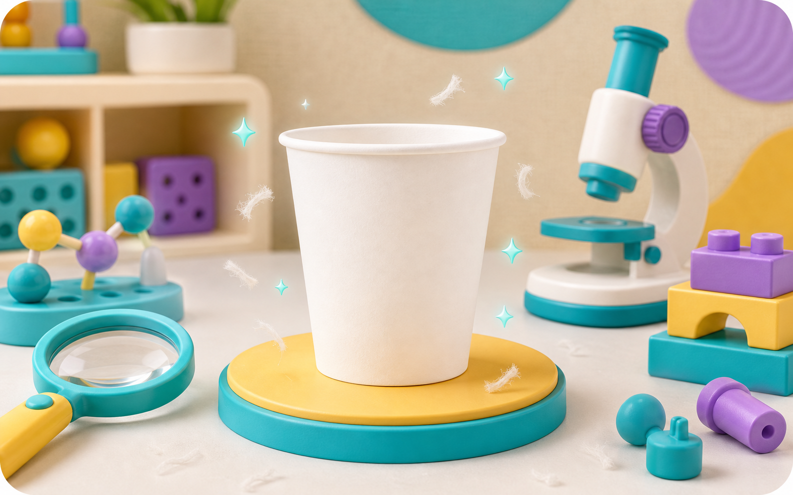
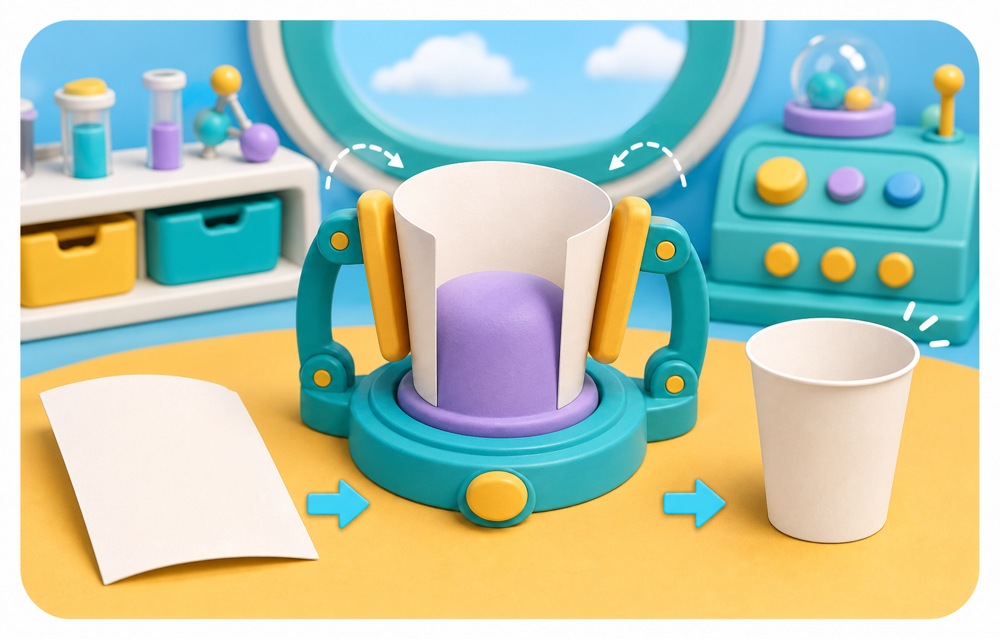

Sợi cây gặp nhau
Sợi cây được làm mềm. Khi nằm sát nhau, chúng bám lại thành một lớp giấy.
Giấy mạnh hơn khi nhiều sợi nhỏ đan vào nhau.
xưởng thử nghiệm
vật thật của em
Từ sợi cây mềm đến chiếc cốc nhẹ trên tay.

Mở từng chặng
Sợi cây được làm mềm. Khi nằm sát nhau, chúng bám lại thành một lớp giấy.

Tấm giấy được cuộn quanh khuôn tròn. Mép cốc được ép chắc để không bung.
Rót một ít nước lạnh, chạm bên ngoài cốc và quan sát giấy giữ hình dạng thế nào.